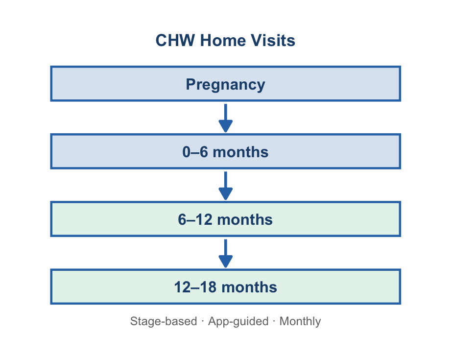
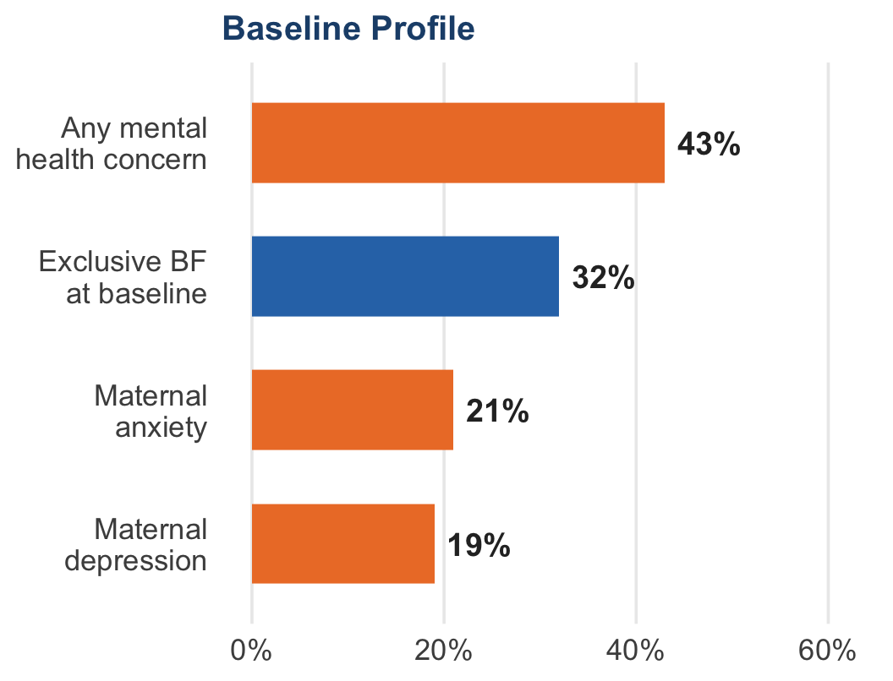
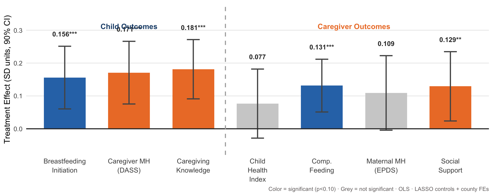
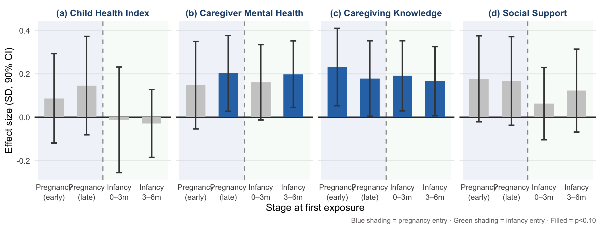
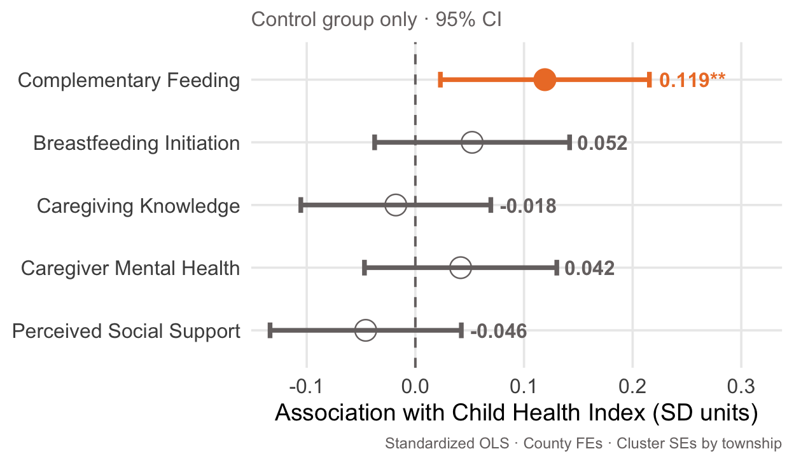
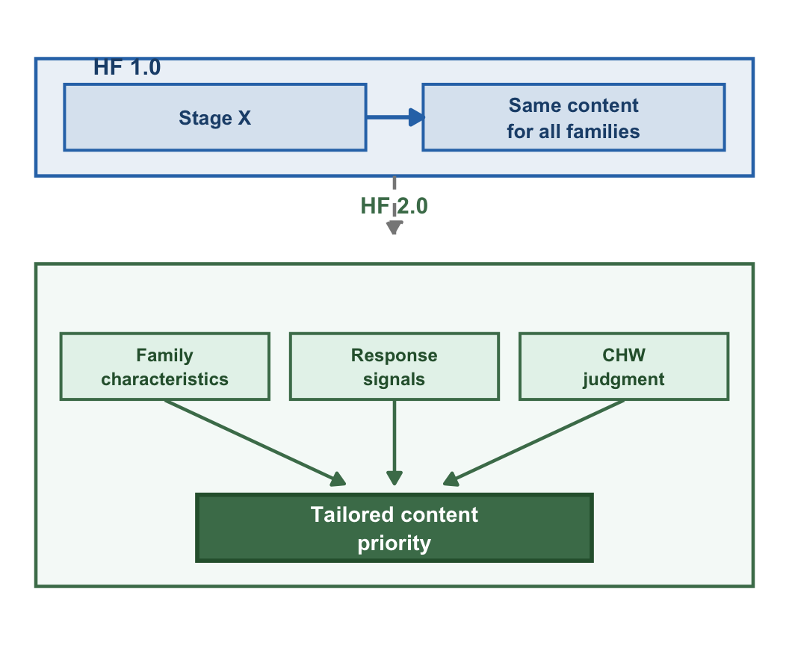
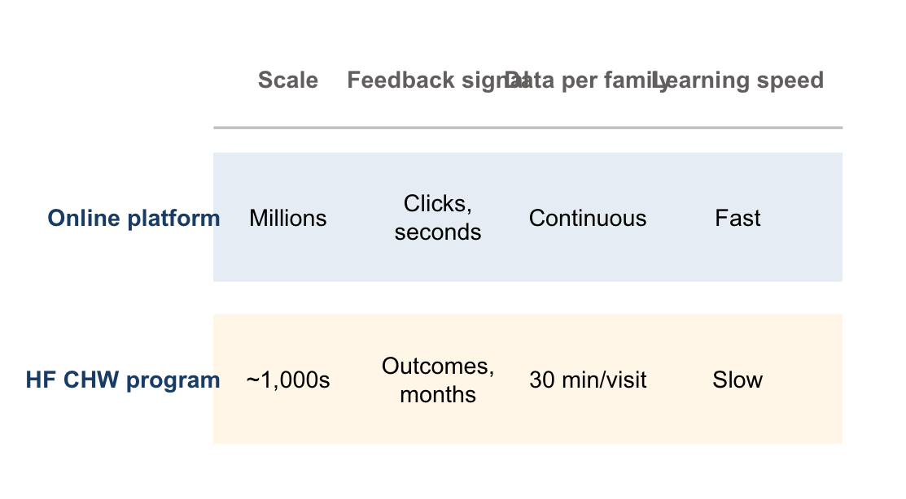

Evidence and Design from the Healthy Future Platform
March 28, 2026
AI-Enhanced Curriculum Delivery
for Community Health Workers
Evidence and Design from the Healthy Future Platform
Sean Sylvia (UNC Chapel Hill) · Gary Darmstadt & Yunwei Chen (Stanford)
Ann Weber & Siva Balakrishnan (University of Nevada, Reno)
Stanford REAP Conference · Irish College Leuven · March 28, 2026
Standard approach: all families at the same developmental stage get the same content — regardless of circumstances.

The app removes the burden — CHWs don’t track where each family is or decide what to teach. The platform does.
119 townships randomized
(40 treat / 79 control)
1,306 families enrolled
across 4 counties
12 months of CHW
home visits
88% follow-up rate
(COVID-period)
499 pregnant women enrolled · 807 families with infants <6m
Post-double-selection LASSO · County FEs · Cluster SEs (township)

Why dietary diversity? Feeding practice changes are the proximate pathway. Biomarker and growth effects require longer follow-up — this is expected, not a failure.


Key finding: Pregnancy enrollment consistently delivers the strongest gains. Programs that start CHW engagement only post-partum are missing the highest-return window.

In the control group, families with better follow-up values on these intermediate outcomes are on stronger long-run child health trajectories.
Implication: short-term gains are leading indicators — not just outputs.
For HF 2.0: Tracking these signals in real time creates a feedback loop for content adaptation — without waiting 12–24 months for child health outcomes.
Foundation for the surrogate index framework (Athey et al. 2019).

Same stage ≠ same family
Two families with a 3-month-old infant may have completely different needs — breastfeeding history, maternal depression, knowledge gaps — but HF 1.0 delivers identical content.
Funded: Cyrus Tang Foundation · 3-year program · Starting 2025
Built on: CareLoom (open-source) · github.com/DHEPLab

Surrogate index
Short-term intermediate outcomes that predict long-run child health → generate usable optimization signal faster — without waiting years
Preference elicitation
Families have private knowledge about their own circumstances → structured choice bypasses the cold-start data problem entirely
China has ~1 million CHWs · Small per-family gains compound at national scale
CareLoom is open-source — any MCH program can adapt it
The entry-timing finding is the most immediately actionable result:
Pregnancy enrollment is a priority design choice.
Programs that begin CHW engagement only post-partum are systematically missing the highest-return window — and the data now shows by how much.
HF 2.0 builds the next layer: moving from knowing when to start, to knowing what to deliver and to whom — at scale.
When does algorithmic content tailoring outperform asking families directly what they need? HF 2.0 is designed to answer that question.
Sean Sylvia | sysylvia@email.unc.edu
UNC Gillings School of Global Public Health
Cyrus Tang Foundation · Stanford REAP · UNC Gillings · University of Nevada, Reno
Sichuan University · The CHWs and families who participated
CareLoom platform: github.com/DHEPLab · Slides & analysis: github.com/sysylvia/hf-belgium-talk
Why this method?
Pre-generated controls in HF_main_anasam.dta:
_CHILD_*, _FAM_*, _CARE_*, _CID_* — already constructed by the Stata pipeline; used directly in this R analysis.
Technical details (Athey et al. 2019)
Construct a composite \(S\) of short-run outcomes that together predict long-run outcome \(Y\) in the control group:
\[E[Y \mid X, T] \approx E[E[Y \mid S, X] \mid X, T]\]
In HF context — candidate surrogates: - Dietary diversity score (6-month interim) - Breastfeeding practices - Caregiver knowledge index - Maternal depression score - Perceived social support
HF 2.0 Phase 1: Formally estimate surrogate index; validate on HF 1.0 control group data; use as optimization target for content recommendation algorithm.
Siva Balakrishnan’s parametric HTE analysis (UNR)
Future work (HF 2.0): - Causal forest / grf package for non-parametric CATE estimation - RATE analysis (Yadlowsky et al. 2021) to quantify targeting gains
Sylvia et al. | Stanford REAP Conference, Leuven 2026